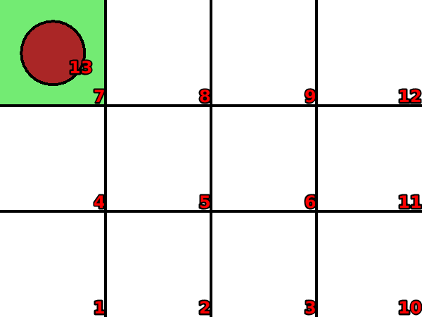
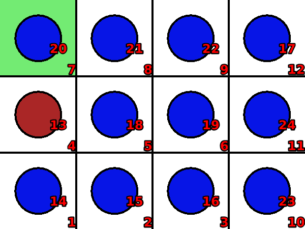

Knights-tour
Language: Teaching Script Entire Dialog
World states:
init-atour2.world
final-atour2.world
Primitive concepts used
Object types:
|
locations, blocks |
Colors:
|
red, blue
|
| Spatial relations: |
on, below, between |
| Functions: |
count of, less than |
Teaching Dialog (Rosie in bold)
TEACHER: The name of the puzzle is knights-tour.
Please setup the puzzle.
TEACHER: Load init-atour2.

Ok.
TEACHER: Ok.
Please describe the actions, goals, and failure conditions.
TEACHER: If a clear location is movable from a captured location then you can move a red block onto the clear location and move an available clear blue block onto the captured location.
Please describe the meaning of 'available' in this context.
TEACHER: If a block is not on a location then it is available.
Ok, I've learned the meaning of 'available' for this context.
Please describe the meaning of 'clear' in this context.
TEACHER: If a location is not below an object then it is clear.
Ok, I've learned the meaning of 'clear' for this context.
Please describe the meaning of 'captured' in this context.
TEACHER: If a location is below a red block then it is captured.
Ok, I've learned the meaning of 'captured' for this context.
Please describe the meaning of 'movable-from' in this context.
TEACHER: If a location that is alongside a captured location is diagonal with an object that is not next to the captured location then the object is movable from the captured location.
Ok, I've learned the meaning of 'movable-from' for this context.
I've learned the action.
TEACHER: The solution has eleven steps.
Ok.
TEACHER: Load final-atour2.

Ok.
TEACHER: The goal is that all locations are covered.
Please setup the goal state.
TEACHER: Ok.
Please describe the meaning of 'covered' in this context.
TEACHER: If a location is below an object then it is covered.
Ok, I've learned the meaning of 'covered' for this context.
I've learned the goal.
TEACHER: Done.
I've learned knights-tour. Should I try to solve the puzzle?
TEACHER: No.
Ok.